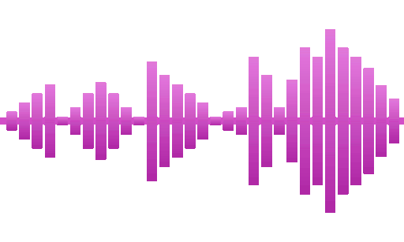

[ CLICK ANYWHERE TO SKIP ]
MON
00:00

×
Minesweeper
×
Message Board
×
AI Chat · GLM-5.3-Flash
Hello, I am GLM. ☞(⌐■_■)☞ Human, need any help?
send
×
Video
×
Thank you！🌹
You have watered the plants for 10 times.
×
💀🐟💀
That was too much...